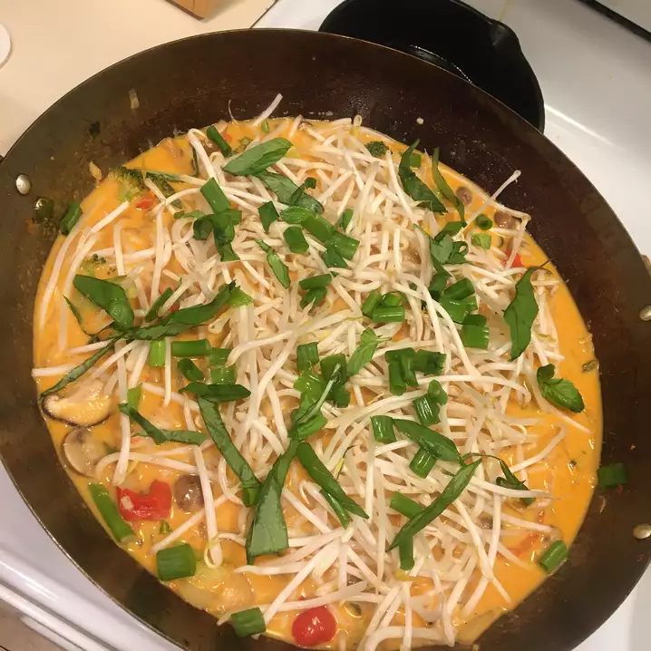

Red Curry Soup

Description
Easy and quick red curry soup that you can cook in 45 minutes!
Ingredients
- ¼ cup red curry paste
- 2 tablespoons olive oil
- 3 cups coconut milk
- 3 cups chicken stock
- 2 limes, juiced
- 1 lime, zested
- 2 cups cherry tomatoes
- 1 pound shrimp
- 14 ounce can bean sprouts, drained
- 1 cup chopped cooked chicken
- salt
- ground pepper
Steps
-
Stir red curry paste and olive oil together in a saucepan over low heat and cook until fragrant, about 5 minutes.
-
Pour coconut milk, chicken stock, lime juice, and lime zest into the saucepan. Bring the mixture to a boil, reduce heat to medium-low, and cook, at a simmer for 10 minutes.
-
Stir cherry tomatoes and cilantro into the soup; bring mixture again to a simmer and cook until the tomatoes are soft, 10 to 15 minutes.
-
Stir shrimp, bean sprouts, and cooked chicken into the soup; cook until shrimp are bright pink on the outside and the meat is no longer transparent in the center, 10 to 15 minutes. Season soup with salt and pepper.